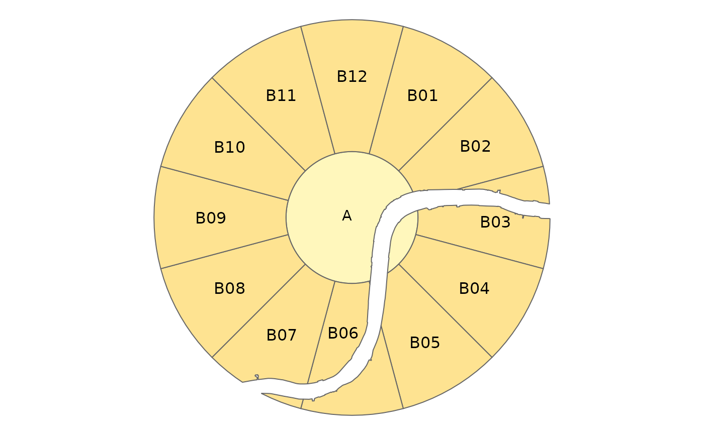
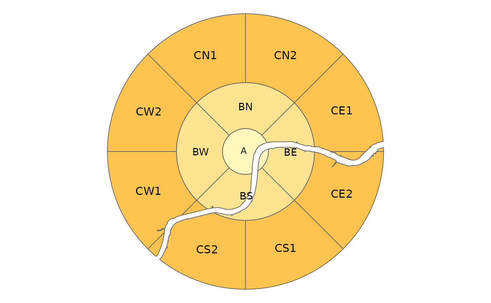

This function first divides geographic space into [annuli](https://en.wikipedia.org/wiki/Annulus_(mathematics)) (concentric 2d rings or 'doughnuts') and then subdivides each annulus into a number of segments.
zb_zone( x = NULL, area = NULL, n_circles = NA, n_segments = 12, distance = 1, distance_growth = 1, labeling = NA, starting_angle = NA, segment_center = FALSE, intersection = TRUE )
Arguments
| x | Centre point. Should be an |
|---|---|
| area | (optional) Area. Should be an |
| n_circles | Number of rings including the central circle. By default 5, unless |
| n_segments | (optional) Number of segments. The number of segments. Either one number which determines the number of segments applied to all circles, or a vector with a number for each circle (which should be a multiple of 4, see also the argument |
| distance | Distance The distances between the circles. For the center circle, it is the distance between the center and the circle. If only one number is specified, |
| distance_growth | The rate at which the distances between the circles grow. Only applicable when |
| labeling | The labeling of the zones. Either |
| starting_angle | The angle of the first of the radii that create the segments (degrees). By default, it is either 15 when |
| segment_center | Should the central circle be divided into segments? `FALSE` by default. |
| intersection | Should the zones be intersected with the area? |
Value
An `sf` object containing zones covering the region
Details
By default 12 segments are used for each annuli, resulting in a zoning system that can be used to refer to segments in [clock position](https://en.wikipedia.org/wiki/Clock_position), with 12 representing North, 3 representing East, 6 Sounth and 9 Western segments.
Examples
#>